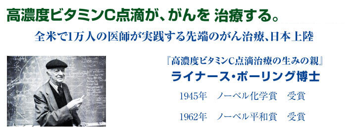

简体中文
简体中文



２００５年９月にビタミンＣ療法の画期的な研究論文が発表。『米国アカデミー紀要』権威ある科学雑誌に論文が掲載された。その内容は、『ビタミンＣは正常な細胞に影響を与えず、がん細胞だけを殺し、副作用が少ない抗がん剤である』との驚くべき内容であった。
この論文を発表したのは、米国国立衛生研究所（ＮＩＨ）、米国国立がん研究所（ＮＣＩ）、米国食品医薬品局（ＦＤＡ）、アイオワ大学フリーラジカル・放射線研究部門に所属する８名のドクターや科学者であった。
正常細胞に害を与えずがん細胞だけを倒す
論文の根拠となった実験は、人間にビタミンＣを静脈から点滴したときと同じ状態を、試験管内で再現して行われました。
普通、人間のビタミンＣの血中濃度は０．１ミリモル程度です（ミリモルとは、ビタミンＣの血中濃度を示す単位）。高濃度のビタミンＣを点滴すると、０．３～２０ミリモルまで上昇します。この時重要なのは、ビタミンＣを点滴で血液中に送り込むということです。ビタミンＣを口からどんなに多く摂取しても、血液中のビタミンＣの濃度は０．２２ミリモルを超えることはありません。
第１の実験では、ビタミンＣが正常細胞に害を与えず、がん細胞だけを殺すかどうかについて検証されました。
具体的には、９種類のがん細胞と４種類の正常細胞をビタミンＣの入った試験管内に１時間さらし、２４時間後にどうなるかを観察しました。その結果、５ミリモル以下のビタミンＣ濃度で、９種類のがん細胞のうち、５種類が５０％死滅し、正常細胞には全く影響がなかったのです。影響のなかった４種類のがん細胞のうち、３種類のがん細胞はその増殖が９９％抑えられました。
第２の実験では、ビタミンＣのがんの細胞死に与える影響が、より詳しく検証されました。
人間のリンパ腫細胞（がん細胞）を、０．１～５ミリモルの間の８段階のビタミンＣ濃度の中にそれぞれ１時間さらしたところ、濃度が２ミリモル以上になると１００％死滅する事が確認されました。つまり、ビタミンＣの濃度が高くなればなるほど、がん細胞の死滅率も上昇する事がわかったのです。
なぜビタミンCはがんに効果的なのか
ビタミンＣが細胞の表面や内部に作り出す過酸化水素やフリー・ラジカルといわれる有害な物質によるものとされています。
ビタミンＣは酸素が存在すれば、細胞の内外で酸化型アスコルビン酸と過酸化水素になります。そして後者はがん細胞にダメージを与えます。ビタミンＣを大量に与えれば当然体内のビタミンＣのレベルは高くなりますが、正常な細胞は自分に必要な量だけビタミンＣを取り入れるだけです。これは細胞自身にそのようなコントロール能力があるからです。
一方、がん細胞は正常細胞が持つこうしたコントロール能力を失っているため、自分の周囲にある大量のビタミンＣをいくらでも細胞に取り入れてしまいます。そしてその結果として、自分に害になる過酸化水素を余計につくり出して自ら死滅するのです。
このほかにもビタミンＣが体内で銅と化学反応してつくり出すフリー・ラジカルが、がん細胞をうまく殺すといった効果もあります。